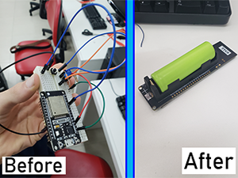

Gabriel
Vieira

GABRIEL VIEIRA
Estudante de Sistema de Informação
Information System Student
Cursando Sistema de Informação na FIAP (Unidade Paulista), paulistano, entusiasta por tecnologias, com conhecimento em Unity3d, uso de Arduino em C++ e desenvolvimento web em HTML/CSS/JS. Caso você queira saber mais, clique aqui.
Studying Information System at FIAP, I was born in São Paulo and passionate about technologies. with skills in Unity3d, usage of Arduino with C++ and web development in HTML/CSS/JS. If you want to know more just click here.
NOME: Gabriel Ovidio Vieira
DATA DE NASCIMENTO:08/08/2003 (
EMAIL: gabrielov2003@gmail.com
NACIONALIDADE:
Brasileiro
LÍNGUA: Português e Inglês
NAME: Gabriel Ovidio Vieira
DATE OF BIRTH:08/08/2003 (
EMAIL: gabrielov2003@gmail.com
NATIONALITY:
Brazilian
LANGUAGE: Portuguese and English
Baixar Currículo
Download Curriculum

MAIS SOBRE MIM
MORE ABOUT ME
Eu nasci na cidade de São Paulo em 2003. Desde pequeno sempre gostei de jogar videogames e usar computadores, até mesmo na escola, informática e matemática sempre foram minhas aulas favoritas. Quando tinha 9 anos comecei a me interessar pelo funcionamento de um computador. Foi aí então que comecei a pesquisar sobre o assunto para entender melhor. Meu pai trabalha com TI e sempre me ajudou muito tirando minhas dúvidas e conversando sobre computação.
Quando tinha 12 anos comecei a ir para uma escola de programação chamada “Super Geeks”,
onde aprendi muito sobre programar e o básico de línguas como C++, C#, JavaScript, XAML,
HTML Python etc… Também aprendi coisas como robótica com arduino e modelagem de objetos
3d. Um dos projetos que eu e meus amigos fizemos nestes anos teve um ótimo resultado,
conseguindo até aparecer em uma rádio local e na TV duas vezes (Clique aqui
caso queira ler mais sobre o projeto).
Não só na escola mas também no meu tempo
livre eu
assistia algumas vídeo aulas sobre programação. Quando tinha 15 anos, quase 16 fui para
os Estados Unidos em um programa de intercâmbio de um ano em Scottsburg (uma cidade
pequena do estado de Indiana). Enquanto estive na escola eu tive aula de ciências da
computação e até mesmo cheguei a participar de um clube de robótica. Em 2021 eu comecei
a faculdade de Sistema da informação na FIAP onde estou no momento estudando.
Sobre mim, fora a Computação eu sou bem calmo, costumo tentar ser bem organizado, usando planilhas do Google Sheets e Scrum Board nos meus projetos, sou focado em aprender coisas novas como por exemplo HTML/CSS/JS que eu aprendi sozinho sem o uso de cursos, facilmente adaptável, assim como tive que me adaptar a uma cidade pequena do interior de Indiana nos Estados Unidos, também gosto de várias coisas tais como futebol, video games, series, estudar finanças, sair com os amigos e família, nadar e viajar.
I was born in a large city in Brazil in 2003. Since I was very young I used to play video games and to use computers, even at school math and computer classes were my favorites. When I was about 9 years old I started to enjoy even more the idea of understanding how computers work. That was when I started to search about it and try to understand more, my dad works with IT so he always helped me with long conversations about computers.
When I was 12 years old I started going to a coding school called “Super Geeks” that was
when I learned a lot about programming. During that time I made a lot of different
projects inside and outside the class, using the basics of languages such as C++, C#,
JavaScript, XAML, HTML, etc… I also learned things such as robotics with Arduino and how
to create 3d objects. One of the projects that me and my colleagues made during years
got a good reputation and even appeared on the TV two times and one time on a local
Radio. (Click Here if you want
to read more about this
project).
Not just at school but also in my free time I had some online classes
about programming during those years. When I was almost 16 years old I went to the
United States to do an exchange program for 1 year in a small city called Scottsburg in
the state of Indiana so I could have new experiences, learn their culture and improve my
English. During the exchange program I took Computer Science classes, participated in a
robotics club and started working on my Portfolio. In 2021 I started the Information
System college at a University called FIAP where I am currently studying.
About myself outside coding life I’ve always been very chill, really organized, always using Google Sheets and Scrum Boards on my projects, very focused on learning new things for example HTML/CSS/JS that I’ve learned by myself without any kind of classes, very easily adapted, like when I had to adapt myself to a small city in the United States. I am someone that enjoys a lot of different things. I like to play soccer, video games, watch series, study finances, hang out with friends and family, swimming, work out and travel.
Competências:
Skills:
Organizado
Organized
Eu sou uma pessoa organizada em diversos sentidos, como em manter meus projetos organizados em pastas, criar planilhas para administrar diversos pontos da minha vida e usar kanban boards para as aplicações que desenvolvo. Também sempre tento aprender novas maneiras de me tornar o mais organizado possível.
I’ve always been a very organized person in a lot of different ways, such as organizing my projects on folders, managing different points of my life in worksheets and using kanban boards for the applications I develop. In addition, I always try to find new ways to be as organized as possible.
Sempre focado em aprender
Always focused on learning
Sou uma pessoa muito focada em aprender coisas novas que me interessam ou considero importantes, três exemplos são: Economia, que eu aprendi pesquisando muito, escutando podcasts, assistindo lives e fazendo muitas perguntas para meu pai. Desenvolvimento web do qual aprendi sem uso de cursos ou ninguém para me ajudar, apenas pesquisando, lendo fóruns e tentando desenvolver por conta própria. E edição de vídeo/imagem que acabei aprendendo apenas utilizando diversos editores repetidamente para várias coisas diferentes.
I am always focused on learning new things that interest me or I think it’s important, three examples are: Economy, which I’ve learned searching a lot, listening to podcasts, watching lives and asking a lot of questions about it to my father. Web development that I’ve learned without any course or anyone to help, but just searching, reading forums and trying to do it by myself. And video/image editing, on which I’ve learned by using a lot of different editing softwares repeatedly for varied things.
Calmo e de fácil adaptação
Easygoing and flexible
Uma das minhas melhores características é ser bem calmo e de fácil adaptação a novos ambientes, isso porque todos que me conhecem me consideram uma pessoa bem tranquila. Logo acho que isso colabora também para eu me adaptar facilmente, um exemplo de adaptação que passei na minha vida, foi sair de São Paulo, uma cidade gigante, para fazer meu intercâmbio em uma cidade pequena no interior de Indiana, Estado Unidos. No intercâmbio tive que me adaptar em relação a tudo, circulo de amizades, casa nova, familia nova, cultura e hábitos completamente diferente e várias outras coisas. E mesmo assim, ocorreu tudo certo sem problemas.
I think one of my best characteristics is being easy going and flexible, that is because everybody that knows me thinks I am a very chill person. So I assume that helps me be very adaptive to new environments. One big example of adaptation in my life was, leaving the huge city of São Paulo, on an exchange program to a small city of Indiana, United States. On the exchange program, I had to go through a big adaptation of my friendships, new home, new family, whole new culture and habits and a lot of other things. Even though I had no big problem and everything went just great.
Sou bom ensinando
Good at teaching others
Essa habilidade eu provavelmente puxei da minha mãe (professora de Inglês) e descobri ao fazer estágio em uma escola de programação chamada “Super Geeks” onde eu ajudava os professores na mentoria e até mesmo fui professor durante um mês em um workshop de como criar jogos 2d.
This skill I probably have because of my mother (English teacher), and I figured I have it by doing it at a coding school called “Super Geeks”, where I’ve been a trainee and helped mentoring kids to code, in addition, I was also the teacher for a month during a workshop on how to create 2d video games.
Ingles e cultura americana
English and American culture
Outra competência que veio muito da minha mãe é o Inglês, idioma do qual ela é professora. Na escola sempre foi uma matéria comum, nem fácil nem difícil, mas fui desenvolver mesmo durante meu intercâmbio para os Estados Unidos onde consegui melhorar muito e aprender bastante sobre a cultura americana no geral pois fiquei no High School durante um ano vivendo lá.
Another skill that came from my mother is the English, which she is a teacher. At school it was always a regular class to me, neither easy nor hard, but where I actually improved it was during my exchange program to the United States where I could learn a lot about the language and their culture even because I went to High School there during this year.
Solução de problemas
Problem solving
Uma competência que eu sempre fui bom é em encontrar soluções para os problemas, seja criando fórmulas para equações matemáticas ou arrumando problemas em códigos, mas uma grande experiência sobre isso foi um projeto incubadora que participei com alguns amigos onde trouxemos soluções para diferentes problemas do dia a dia e acabamos trabalhando por muito tempo sobre este. Caso queira saber mais sobre o projeto clique aqui.
One skill that I was always good at is solving problems, either creating formulas to mathematical equations or troubleshoot coding, but one big experience about it was a Incubator project I did with some friends where everybody brought solutions to day-by-day problems and we worked on it a lot. If you want to know more about it, just click here.
Portfólio:
Portfolio:
Unity3d
Unity3d
Eu usei Unity3d diversas vezes para criar jogos, tanto para computador quanto para mobile em 3D, realidade aumentada e realidade virtual. Então deixarei anexados alguns vídeos demonstrando um MVP de jogo que fiz com uma amiga e uma projeção 3d de academia de crossfit que fiz para um trabalho de faculdade de um amigo.
I have used Unity3d multiple times to create both computer and mobile games in 3d, augmented reality and virtual reality. Therefore, you can find attached 2 videos showing a MVP of a game that I made with a friend and a 3d crossfit gym mock up I’ve made for a college work of a friend.
HTML/CSS/JS
HTML/CSS/JS
Sobre minha experiência com as linguagens HTML, CSS e JavaScript eu aprendi tudo por conta própria pesquisando em diversos sites. Comecei a aprender para criar este site do qual foram feitas 3 versões. A primeira foi apenas um teste para que eu conseguisse entender melhor as linguagens, a segunda usei para demonstrar minhas edições de vídeo e imagem, assim transformando-o em uma fonte de renda adicional através de pequenos trabalhos no Freelancer.com. A terceira versão, que é a atual, foi criada com o intuito de falar sobre minha vida pessoal, habilidades e experiências com tudo relacionado à tecnologia da informação. Caso queira ver o código, entre em meu github aqui.
About my experience with the languages HTML, CSS and JavaScript I’ve learned everything by myself searching on several websites. I’ve learned those languages to create this website which I made 3 different versions of. The first was just a test so I could learn more about the languages, the second I made to show all of my video and image editings to support me to earn some money with small jobs on Freelancer.com. The third version, which is this one you are in right now, I’ve made to talk about my personal life, my skills and experiences related to Technology Information. If you want to checkout the code, go to my github here.
NANO COURSES
NANO COURSES
Na faculdade de sistema de informação da FIAP, os alunos tem acesso a diversos cursos do qual liberam provas ao terminar todas as aulas, nesta prova se o aluno tirar mais de 70% ele recebe um certificado de conclusão do curso, então decidi deixar anexado todos os meu certificados neste post.
Every Information System Student at FIAP has access to multiple courses which at the end has a final test, if the student scores more than 70% he receives a certification of conclusion of the course, so I will attach all my certificates on this post.
Projeto com Arduino
Project with Arduino
Quando eu tinha 12 anos, comecei a ir para uma escola de programação chamada “Super Geeks”, durante meu segundo ano comecei um projeto chamado “Incubadora” onde eu e meus amigos tivemos algumas ideias de dispositivos e programas que pudessem melhorar o mundo. A ideia selecionada foi a “SOS Sequestro” que era basicamente um pequeno dispositivo para esconder na roupa, no qual quando você pressionasse o botão enviaria uma mensagem para o seu contato de emergência com a sua localização e falando que você poderia estar em perigo. O projeto tomou muito tempo, mas conseguimos fazê-lo trabalhando 2 horas por semana. Depois de um tempo aparecemos na TV para dois programas diferentes e uma rádio local. Aqui estão algumas fotos e vídeos do projeto.
When I was 12 years old I started to study at a coding school called “Super Geeks”, during my second year we started a project called “Incubadora” where me and my friend got some ideas of how devices and programs can change the world in a good way. The chosen idea was called “SOS Sequestro” (In english it would be SOS Kidnapping). The idea was basically a device small enough to be hide on your clothes and when you double press a button it sends a text message to your emergency contact saying that you are in trouble, and what is your location. The project took a lot of time but we made it working 2 hours per week. After a while this project appeared on TV for two different national channels and in a local radio. Here are some pictures and videos of the project.

Chatbot Watson Assistant
Chatbot Watson Assistant
Ao assistir uma live conheci o Watson Assistant, chatbot da IBM, então decidi dedicar meu tempo para me aprofundar um pouco e criar meu próprio chatbot que responde as perguntas como se fosse eu. Caso queira dar uma olhada clique no botão azul no canto inferior direito e me dê um feedback se possível.
Watching a livestreaming, I met the Watson Assistant, chatbot from IBM, so I decided to deep dive on that solution and create my own chatbot, that could answer the quentions as if it was me. If you want to checkout the result click on the bottom-right blue button and give me a feedback if you want.